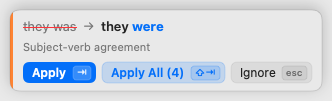
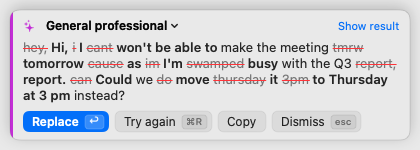
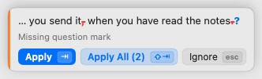
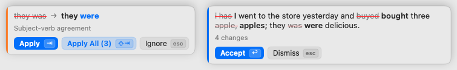

Grammar fixes in any Mac app.
Nib lives in your menu bar. It underlines mistakes as you type, fixes a whole field with a double-tap of ⌥, and rewrites a selection in the tone you pick, using the AI provider you choose with your own key.
Download Nib for Mac How to set it up
Free and open source · macOS 13 or later · signed and notarised · updates itself


Live checking
Wavy underlines as you type: red for spelling, orange for grammar, grey for wording. Hover over one, or put the cursor in it, for the fix and the reason. Then Apply, Apply All or Ignore.
Correct with ⌥⌥
Fixes the selection, or the whole field. Apply it straight away or see the changes first. ⌃⌥Z undoes it.
Rewrite with ⇧⇧
13 editable styles, from concise or friendly to “asking for a pay raise”, plus your own.
Your AI, your key
Gemini, Claude, OpenAI, DeepSeek, Qwen, Vertex AI, or any OpenAI-compatible server, including local models.
Private by design
No Nib server and no analytics. Text goes only to the provider you pick. Logs never contain your text. Details
Works where you write
Mail, Notes, Messages, Safari, Chrome, Slack and more. VS Code support is experimental. Pause everything with ⌘⌘.

